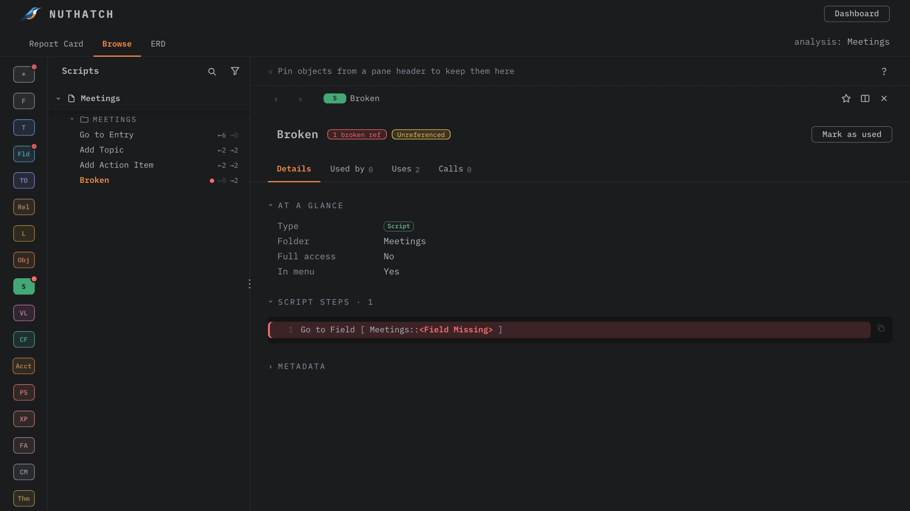
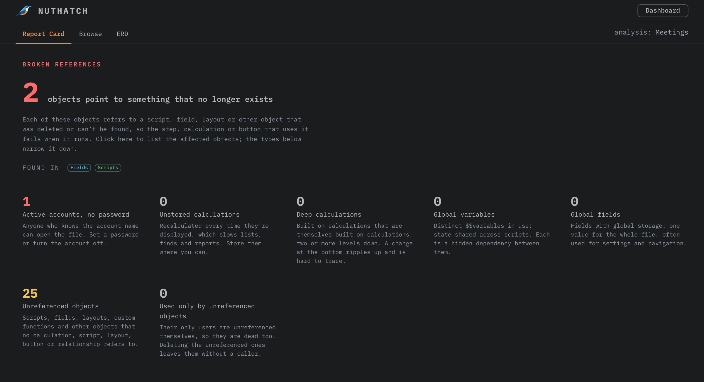
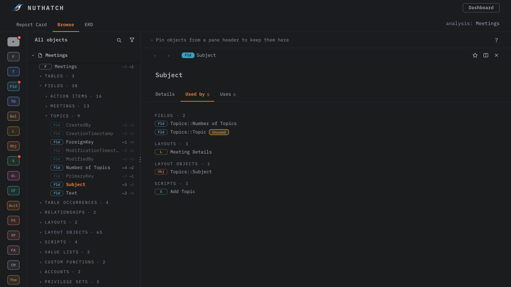
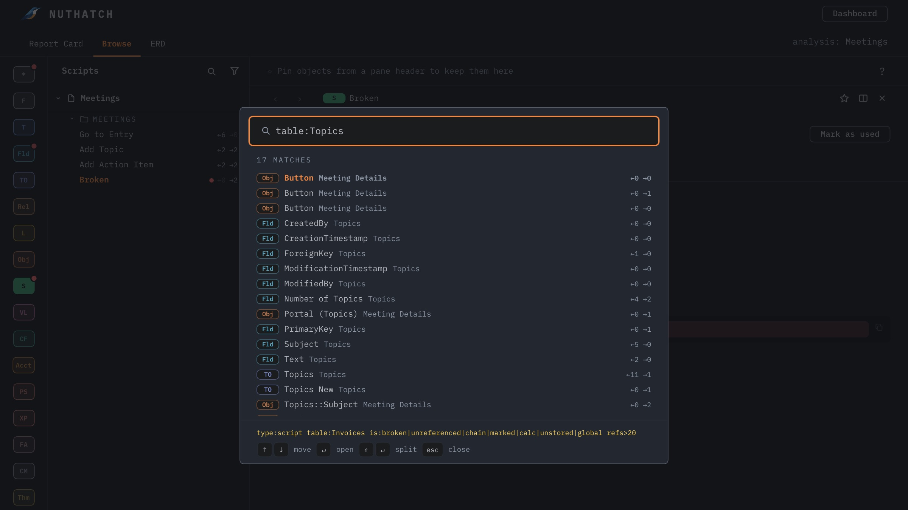
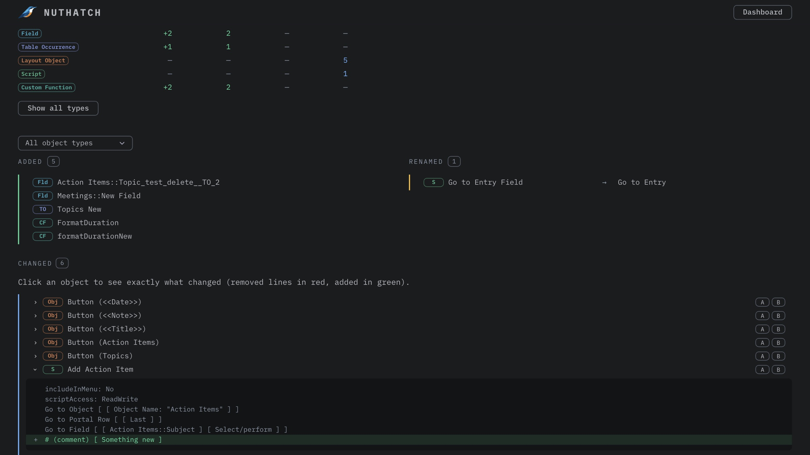
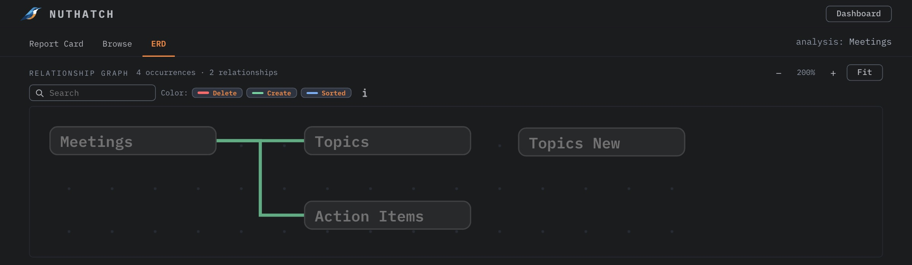

Browse every object
Pick an object type in the navigator and open any table, field, layout, or script. Each one shows what it references, what references it, and its call chain, with broken references flagged where they occur.
nuthatch is a static-analysis tool for FileMaker “Save a Copy as XML” exports. Load one file or a whole multi-file solution and explore its structure, dependencies, call chains, and maintenance risks. Find broken references and unused objects, trace where any field or script is used, and compare two versions side by side. Everything is parsed locally, in your browser or the desktop app. Nothing is uploaded.
Pick an object type in the navigator and open any table, field, layout, or script. Each one shows what it references, what references it, and its call chain, with broken references flagged where they occur.

The report card counts broken references, unreferenced objects, accounts without a password, and unstored or deep calculations. Click any number to see the objects behind it.

Open the Used by tab before you rename or delete something. It lists every field, layout, button, and script that depends on the object, across all loaded files. Uses shows the other direction, and a script's Calls tab shows its call chain.

Search names, calculations, and script steps across every loaded file. Filters like
type:script, is:unreferenced, or refs>20
narrow it down.

⇧-click a search result or a reference to open it in a second pane. Collapse the navigator when you need the room, like here, comparing two versions of a custom function.
Save an analysis, export again later, and compare. Renamed objects stay matched, and changed scripts and calculations show a line-by-line diff.

The ERD tab draws the relationship graph with each table occurrence in its FileMaker color. Color the lines by cascade delete, record creation, or sorting, click a box to highlight the other occurrences of its table, and double-click it to show its fields.

Choose Export for AI… on any saved analysis, or run the command-line tool. nuthatch writes a compact index of your solution into your project folder, with every reference already resolved, so your assistant looks answers up instead of searching the raw XML.
An AI assistant answered the same 20 dependency questions twice: once from the export, once from the XML.
Against 11 of 20 from the XML, where it credited references to the wrong script, counted steps from 0, or missed deleted objects.
0.07 s against 1.25 s to search the XML. The one-time export takes 8 seconds.
Measured on a 127 MB production solution with 21,867 objects. The questions asked what calls a script, what references a field (and whether it can be deleted), what goes to a layout, where a custom function, value list or table occurrence is used, what a script references, and whether a script references anything deleted. A single lookup such as “What uses this field?” returns a median of 116 tokens, against 1,177 for a search of the XML (estimated as characters divided by 4).
The standalone nuthatch command runs the same parser without opening the
app, and it doesn't need Node installed. Re-export after every change to your solution,
or add it to a script.
nuthatch export-ai Solution.xml
Exported 21867 objects and 46949 references
to ~/my-project/nuthatch